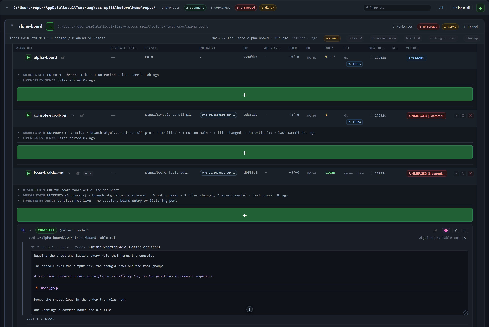
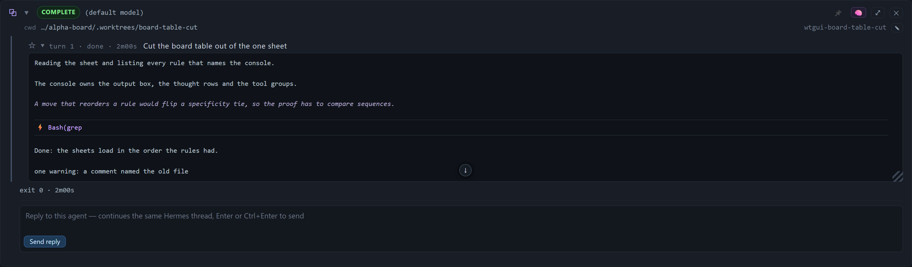
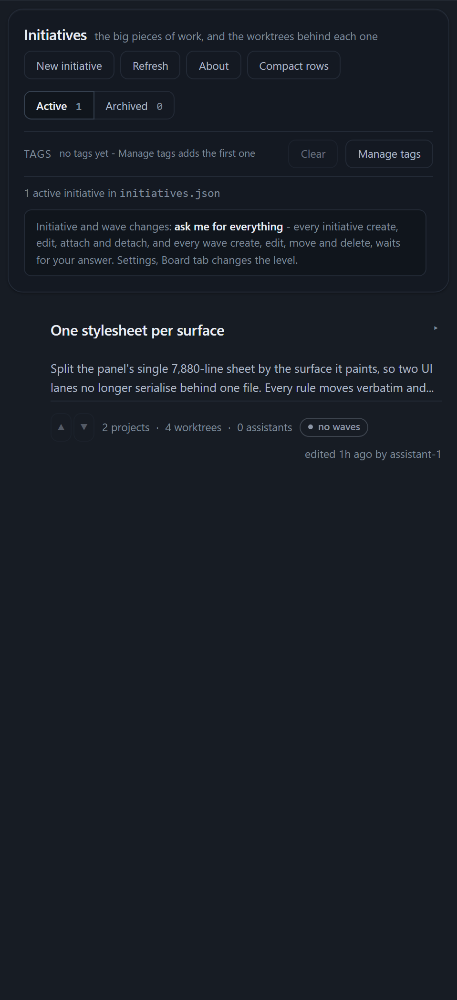

The cut, the rule-stream proof and the six-pane layout delta. Every number below was measured by
tools/verify-css-split.mjs on this tree, against this tree with the cut undone -
public/style.css restored from 623f3864, the last commit in which it exists. That
counterfactual is the only one that isolates the stylesheet: main moved under the branch while the cut was
written, so an older commit would put its own app code next to the old sheet and a measured difference would
belong to that landing rather than to the cut.
public/index.html in the order its rules hadpublic/chart.css, public/core/pipeline-card.css,
public/core/task-card.css - same files, same load position after the sheetsThe file was cut at blank-line seams, at brace depth 0, into contiguous ranges. Contiguity is what lets the sheets load in file order and reproduce the cascade exactly: the concatenation, not a re-arrangement. A sheet may own more than one block when an unrelated feature sat inside its range, and the ranges it covers are listed here so a reviewer can re-cut the file and get the same answer.
| Sheet | Surface | style.css lines | Moved | Bytes | sha256 of the moved text |
|---|---|---|---|---|---|
base.css | tokens and resets | 1-85 | 85 | 4,832 | f4b7226c475f9adb |
chrome.css | header and status strip | 87-322 | 236 | 14,703 | 01f5c662b84affbd |
settings.css | Settings drawer and its tabs | 323-737 | 415 | 43,669 | cabd7c1f953d7612 |
board.css | project boxes, folders, agent rows, new-agent form | 739-1212 | 474 | 30,403 | 0ee3fe8ecbd288f2 |
jobs.css | job cards | 1214-1396 | 183 | 15,887 | 0e0a07a119da9519 |
console.css | the console: agent pane and thought rows | 1397-2256 | 860 | 59,021 | 62a93f55cbbc46d8 |
turns.css | conversation turns | 2258-2377 | 120 | 9,527 | 36ac1e704ae48d3d |
rows.css | the jobs table's row controls, marks and artifacts | 2379-2951 | 573 | 31,091 | 0460587363323301 |
overlays.css | deliverables, reply box, question cards, ghost turns | 2953-3605 | 653 | 50,424 | 6ec65d9fbfd582db |
rowstrips.css | git, description, release and TODO strips | 3606-3873 | 268 | 21,032 | 239415d81246dde6 |
boardchips.css | host, rules, turnover, board and cleanup chips | 3875-4170 | 296 | 17,736 | e7a7cebf421062fc |
assistant.css | the assistant entry, spawn strip and float shell | 4172-4440 | 269 | 20,117 | 3e19a28a6bd8a818 |
feedback.css | Clarify, Collisions and Permissions controls | 4442-5099 | 658 | 30,977 | c46305cda4e9a6e2 |
assistant-panes.css | the float's tabs, panes, search and settings | 5102-5329 | 228 | 17,910 | aae25e4e9ba8c169 |
initiatives.css | the initiatives tab | 5331-6778 | 1,448 | 87,535 | 4d7590d6d1a64635 |
panes.css | the assistant's Worktrees and Bridge sub-tabs | 6781-6952 | 172 | 16,615 | c888d64820a32801 |
queue.css | the queue cards and the assistant queue pane | 6953-7071 | 119 | 12,924 | 59286eb19aed7e90 |
pipeline.css | pipeline window, messages, flow and modal | 7072-7601 | 530 | 52,512 | 77168f9fc3113d8a |
late.css | late overrides, loaded last | 7603-7880 | 278 | 14,428 | 5087507b012c8399 |
7,865 moved + 15 blank separators = 7,880 source lines. The 13,883 bytes the sheets carry beyond the old file are the 19 boundary comments; every rule, selector and declaration is byte-for-byte the source's own text.
The claim is not "the selectors still exist", it is "the sequence is the same". The harness reads the pre-split
blob out of git, parses it and the sheets into a normalized stream - {at-rule context, selector, declarations}
with comments dropped and whitespace collapsed, and nothing else touched - and compares the two as sequences
(tools/verify-css-split.mjs:143). The at-rule context is part of the key, so a rule that moved out of its
@media block would fail even with the same selector.
PASS stream: the sheets in load order carry the old file's rule count: 3,061 vs 3,061
PASS stream: selector and declaration sequence is identical: 3,061 rules, in order
The load order itself is read from public/index.html (public/index.html:5-33),
not from a list in the harness, so the proof follows the page rather than a second hand-kept copy of it.
Two independent readings back the stream. First the CSSOM: the page applied 3,312 rule nodes before the
split and 3,312 after it, across 5 sheets and then 23 (style.css became 19, plus
chart.css and the two core/ card sheets). Rule NODES outnumber selectors because at-rules
carry their own, so only the sum is the claim, and the sum matches.
Second the cascade itself, which is the part a text comparison cannot see: a specificity tie decided by source order. Six panes were measured as the browser laid them out, and every box and text position matches (section 4).
Both trees are driven through the same fixture - two projects, four worktrees (one dirty, one ahead), two job
records with output, a thought row, a tool call and an error line, four queue tasks, one initiative - booted from
this tree with the cut undone (git archive HEAD, the pre-split sheet written back over the nineteen
sheets and the shell's single link restored) and from this tree as committed. The fixture is byte-identical
(fixed commit dates, so even the shas match) and the page clock is frozen at one instant, so a difference can
only come from the stylesheet. Every element under the pane root contributes its border box, measured relative
to the pane's own root (the page's scroll position is not a stylesheet decision); every text run contributes
its client rects (tools/verify-css-split.mjs:395). A pane is measured only after its own text and
element count hold still for five consecutive samples, and a cell still carrying the panel's not-read-yet mark
holds the measurement back until the scan classifies it.
| Pane | Root | Elements | Boxes differ | Max delta | Text runs | Text positions differ |
|---|---|---|---|---|---|---|
| board table | #projects | 778 | 0 | 0 | 438 | 0 |
| console | .job[data-thread] | 68 | 0 | 0 | 33 | 0 |
| queue cards | #as-queue | 174 | 0 | 0 | 109 | 0 |
| assistant float | #assistant | 295 | 0 | 0 | 165 | 0 |
| initiatives | #as-initiatives | 49 | 0 | 0 | 33 | 0 |
| settings | #settings | 1,652 | 0 | 0 | 1,030 | 0 |
PASS every box and text position is identical across the six panes. The pre-split export was measured twice first and matched itself on all six panes (max delta 0): a harness that cannot repeat itself makes a before/after match meaningless, so that pair is printed as its own row set in the tool's output.
Five of the six captures are byte-identical between the two trees. The board table is not, and the difference is
the countdown rings: 1,066 pixels of 7,264,384 (0.015%), in one 37 px wide column (x 2,552-2,588 of a
3,296 px wide 2x capture) running the height of the table, where four
svg arcs carry a stroke-dashoffset that moves every second. That is the one time-driven value
the measurement deliberately excludes, and it differs between two runs of the same tree as well. The layout
boxes and text positions of that pane are identical, which is the claim the rings cannot touch.



Nothing in the CSS, but a stylesheet move is also a pin move for anything that reads the sheet by name.
public/style.css to assert a rule's presence or its order. They now read
one shared helper, test/style-sheets.js:17, which concatenates the sheets in the order
public/index.html links them - the order the browser applies. The assertions themselves are
unchanged; only the file they read is. 509 tests in those 46 files pass.lib/build-version.js:30 named style.css in the bundle's ALWAYS list.
The list now names base.css, the token layer the shell cannot render without; the other eighteen
sheets are found from the shell's own tags, which is how that module was already written to work.test/build-http.test.js pinned /api/build's per-file hash and the versioned asset
URL by the old name. It now pins chrome.css and chart.css - one sheet the split created
and one that stayed put - and a stale /initiatives.css?v= URL still serves.No rule was edited to make a test pass, and no test's assertion was relaxed: the one order-sensitive pin
(test/tail-chip-shared-rule.test.js) reads the sheets and then chart.css, which is the page's
own order.
A UI lane that touches one surface names one sheet instead of a 7,880-line file: a console change names
public/console.css, an initiatives change names public/initiatives.css, a settings change
names public/settings.css. There are 19 surfaces to name, against one before; the largest is
initiatives.css at 1,448 lines and the median is 278. Two lanes whose work lands in different sheets no
longer serialise behind each other, and the panel's lane map is what makes that visible before the cut.
Two naming notes, because a sheet's name is a promise: the table's own cells live in public/chart.css
(the earlier chart cut) and were left there, so rows.css carries the row's controls and marks rather than
table/thead. And late.css is loaded last on purpose: its rules are the ones that
have to beat the rest, and they were already at the end of the file.
node --test --test-concurrency=4 --test-timeout=60000) over 463 files, in two halves because this host stalls a single 463-file run, and the second half in four chunks of about 58 files because it stalled on its own:| Run | Files | Tests | Pass | Fail |
|---|---|---|---|---|
| half A (files 1-232) | 232 | 2,107 | 2,094 | 9 |
| half B, chunk 1 (233-290) | 58 | 464 | 462 | 2 |
| half B, chunk 2 (291-348) | 58 | 417 | 411 | 6 |
| half B, chunk 3 (349-406) | 58 | 502 | 502 | 0 |
| half B, chunk 4 (407-463) | 57 | 553 | 544 | 9 |
| total | 463 | 4,043 | 4,013 | 26 |
config.json is gitignored and absent (gateway-permissions, the settings route, the config-key walk, the discovery tier, the park hold, the rebase route, the reconcile depth, scan roots, the main-moving counts), the waves route and the assistant store's restart reads need that same file, there is no node_modules junction to walk, and tools/verify-queue-agents.mjs declares itself a LIVE GATE with no verify: script on the base too. gateway-permissions was re-run in a git archive export of 623f3864 (this base) and fails there with the identical ENOENT ... config.json, which is the attribution. No failure names a file this cut touched.test/reports-are-tracked.test.js caught this page being written but not staged, because .git/info/exclude carries docs/reports/*.html. It is force-added.tests / pass / fail block: the tests finished and the process refused to exit, so its block is the reading.public/app.js, public/board-scaffold.js and
public/assistant.js), and the one test failure that was ours is a staging rule, not a code path.node tools/verify-css-split.mjs # both halves, about 90 s
node tools/verify-css-split.mjs --stream # the rule stream only, about 1 s
node tools/verify-css-split.mjs --old <rev> # a different pre-split revisionThe pixel half exports this tree with git archive HEAD into the scratch directory, undoes the cut
there (the pre-split sheet written back, the sheets removed, the shell's single link restored), boots the panel
from that root and from this tree against identical fixtures, and writes the captures under
docs/reports/css-split/{before,after} plus delta.json. It exits 2, not 0, when Playwright is
absent, so an unrun half is never read as a pass.
~/.wag or the live listener on 7331.Written by the split-public-style-css-into-per-surface worktree run.
Sources: tools/verify-css-split.mjs, docs/reports/css-split/delta.json,
public/index.html:5-33, test/style-sheets.js:17, lib/build-version.js:30.